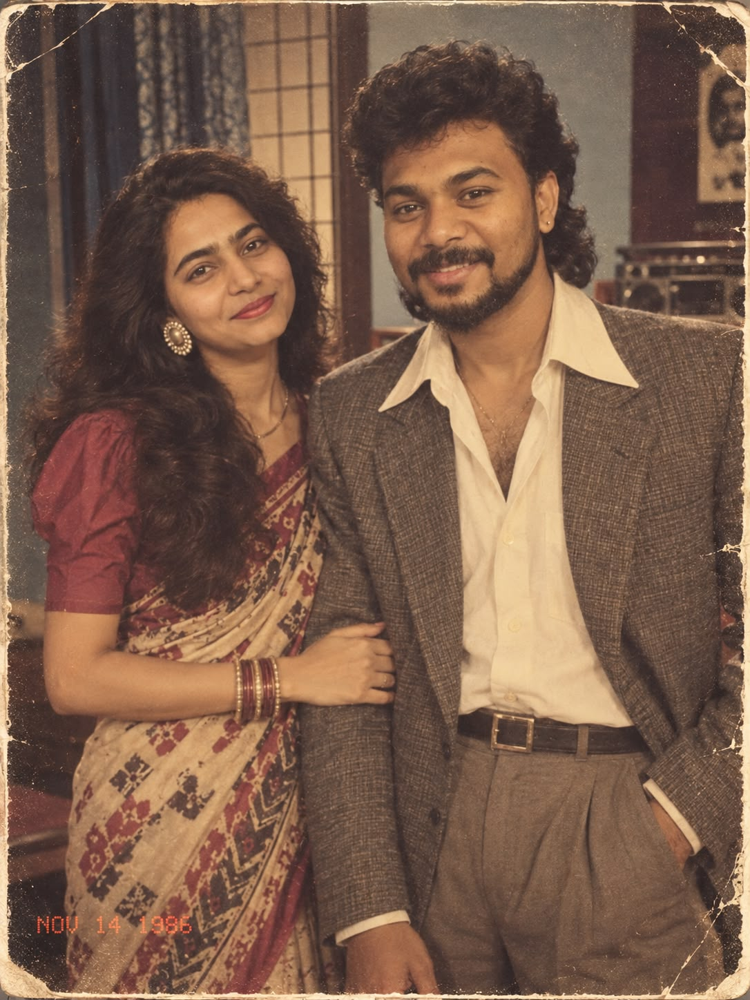
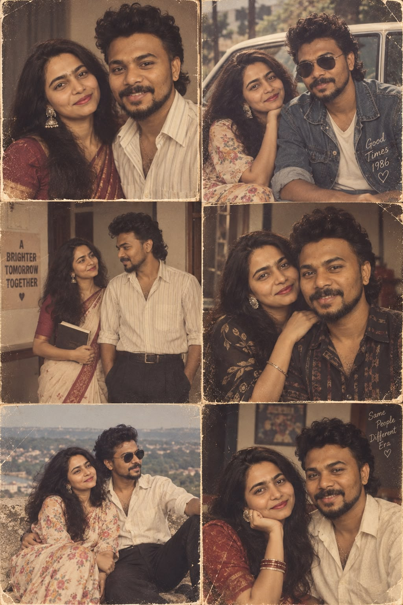

A little something from me to you
Babylu,
I'm sorry.
Before you read anything else… just know that I love you.
I am genuinely sorry.
Babylu, I am really sorry for shouting at you. I know that I hurt you, and knowing that you cried because of me honestly hurts me too.
Sometimes I get angry and I let that anger come out as shouting. That is not an excuse. You don't deserve to be spoken to that way, especially by someone who says he loves you.
I want you to know that I am taking us very seriously. You are not casual to me. This relationship is not something I take lightly. You matter to me more than I sometimes know how to put into words.
I know I haven't always been able to give you the time you deserve. The daily travel from office to home leaves me exhausted, and there are so many things running around in my head. Sometimes I overlook things or forget something.
But please don't ever mistake that for me ignoring you or taking you casually. I am trying. I really am.
And I want to become better at showing you that — not just saying it.
I'm sorry, Babylu.
I love you a lot. ❤️
A tiny melody
just for you.
No famous song.
No borrowed words.
Just a little melody
made for this moment.
PLAY SIDE A
tap the record
When my head gets noisy,
my heart is still sure.
Sometimes I may not say everything at the right time.
But these things are true:
Imagine us
in the 80s.
Different clothes.
Different cars.
Different time.
Probably the same two idiots
falling for each other. ❤️


SAME PEOPLE.
DIFFERENT ERA.
SAME LOVE.
And this is all I wanted to say
I don't want to
win the fight.
I want to
win your smile back.
I'm sorry for shouting.
I'm sorry for hurting you.
I'm sorry for the moments
I make you feel less important
than you are.
I will work on my anger.
I will communicate better.
I will keep choosing us.